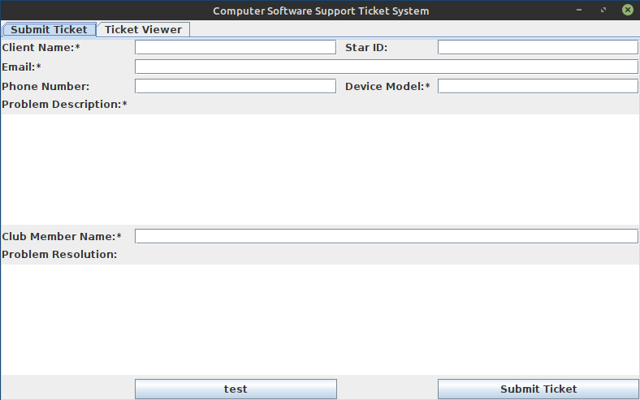
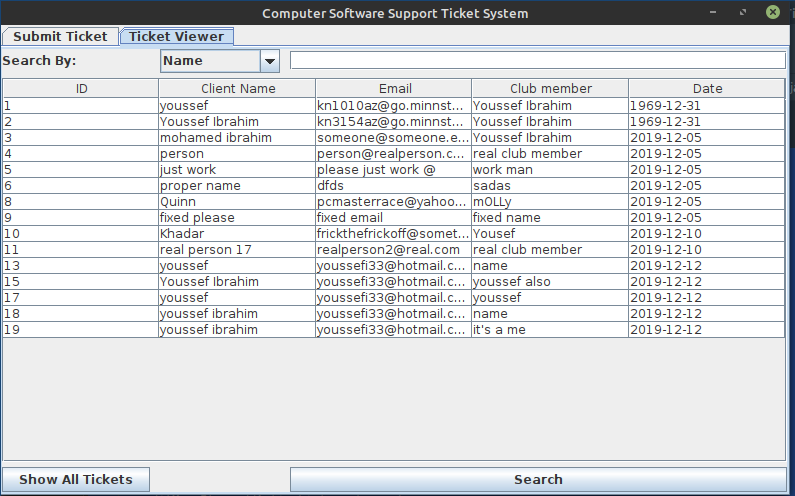

I made this program during my Java class, with the idea of what i would need if i were to make a ticketing app for my club.It's a fairly simple app, lets you input a bunch if fields for a problem with a pc, and adds them to a database that you can later edit. While I doubt this is ever gonna see use, it's still my favourite program
private void rightClickMenu(){
// creating a new popup menu called rightclickmenu
JPopupMenu rightClickMenu = new JPopupMenu();
// creating new menu items to add to the right lick menu
JMenuItem deleteMenuItem = new JMenuItem("Delete Row");
JMenuItem editMenuItem = new JMenuItem("View/Edit");
// adding the items to the right click menu
rightClickMenu.add(deleteMenuItem);
rightClickMenu.add(editMenuItem);
// setting the right click menu to the ticket table
ticketTable.setComponentPopupMenu(rightClickMenu);
// clicking either delete or view/edit will call other methods
deleteMenuItem.addActionListener(e -> {
// calling a method that deletes a row in the table
deleteTableRow();
});
editMenuItem.addActionListener(e -> {
// calling a method that opens a new gui
newFramePopup();
});
} (I forgot how much code was in this program)
And some screenshots
 